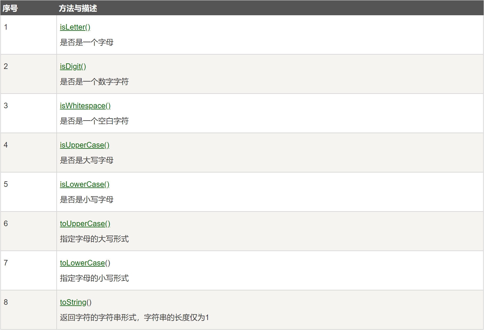

9 Java字符类Character字符串类String和StringBuffer¶

字符类Character¶
Character用于对单个字符进行操作。
我们知道Java内置了数据类型char，但面向对象的Java在实际处理过程中需要的是对象，于是包装类Character就被设计了出来。
创建对象代码如下：
Character ch = new Character('a');
也可以利用装箱简写代码：
Character ch = 'a';
Character类具有以下方法：

字符串类String¶
字符串在任何编程语言都是应用非常多的，Java提供了String类来对字符串进行操作。
创建字符串有两种方式：
简单方式
String str = "Runoob";
new关键字
String str2=new String("Runoob");
它们的区别在于，前者创建的字符串存放在公共池中，后者存放在堆上：
// 简单方式 公共池
String s1 = "Runoob";
String s2 = "Runoob";
String s3 = s1;
// new关键字 堆
String s4 = new String("Runoob");
String s5 = new String("Runoob");
如下图所示：

String有3个常用方法：
获取长度
String site = "www.runoob.com";
int len = site.length();
连接字符串
// 调用方法
"我的名字是 ".concat("Runoob");
// “+”操作符
"Hello," + " runoob" + "!"
创建格式化字符串
String fs;
fs = String.format("浮点型变量的值为 " +
"%f, 整型变量的值为 " +
" %d, 字符串变量的值为 " +
" %s", floatVar, intVar, stringVar);
String类的更多方法如下图所示：


StringBuffer和StringBuilder类¶
String创建的字符串对象是不能修改的，如果想修改，那么需要用到StringBuffer和StringBuilder类。
StringBuilder相对于StringBuffer来说有速度优秀，所以大多数时候使用StringBuilder即可。如果想要保证线程安全，那么只能使用StringBuffer。
StringBuilder示例：
public class RunoobTest{
public static void main(String args[]){
StringBuilder sb = new StringBuilder(10);
sb.append("Runoob..");
System.out.println(sb);
sb.append("!");
System.out.println(sb);
sb.insert(8, "Java");
System.out.println(sb);
sb.delete(5,8);
System.out.println(sb);
}
StringBuffer示例：
public class Test{
public static void main(String args[]){
StringBuffer sBuffer = new StringBuffer("菜鸟教程官网：");
sBuffer.append("www");
sBuffer.append(".runoob");
sBuffer.append(".com");
System.out.println(sBuffer);
}
}
StringBuffer类的主要方法如下图所示：